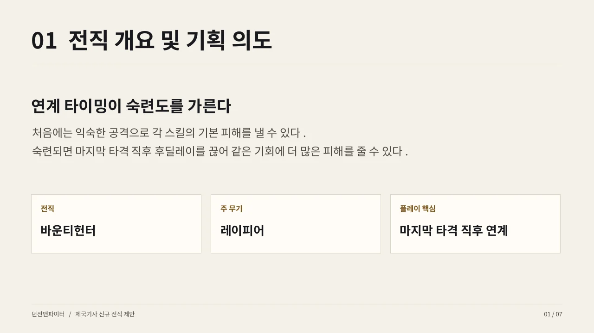
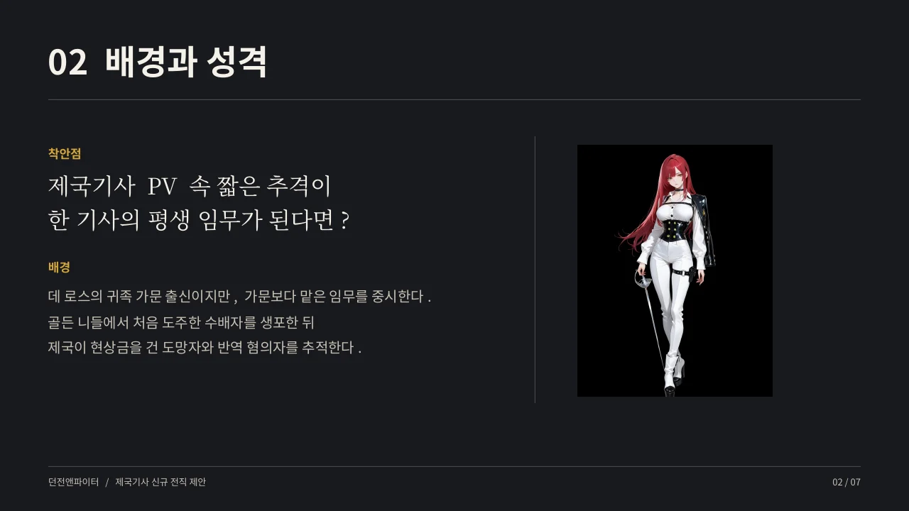
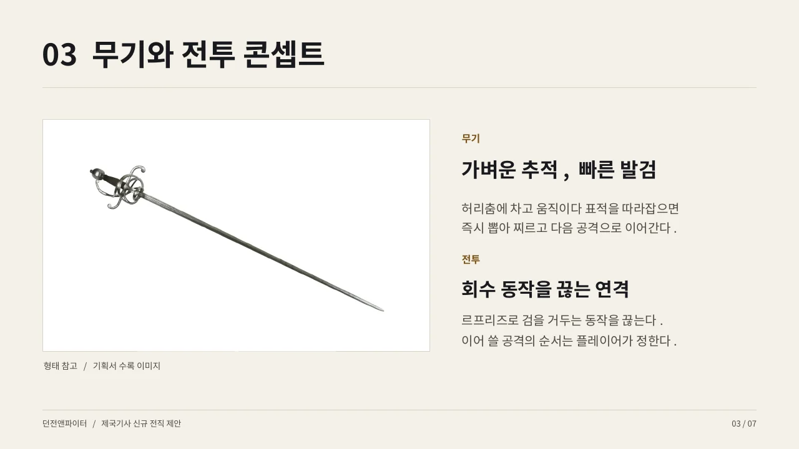
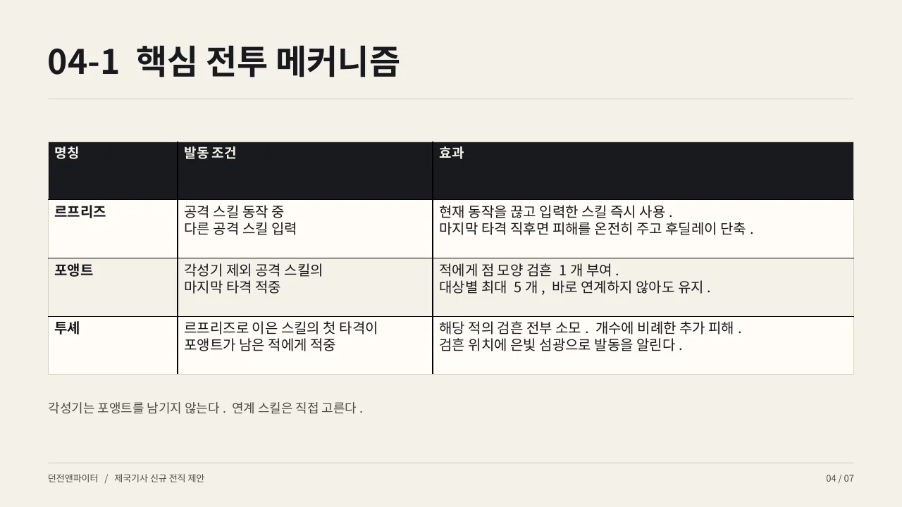
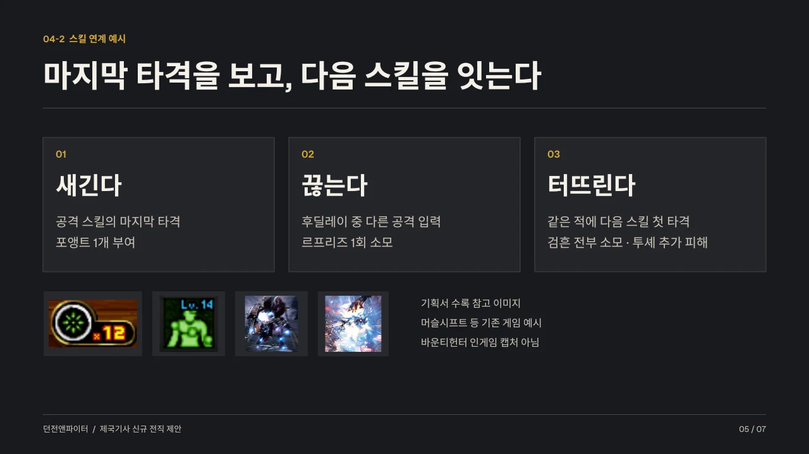
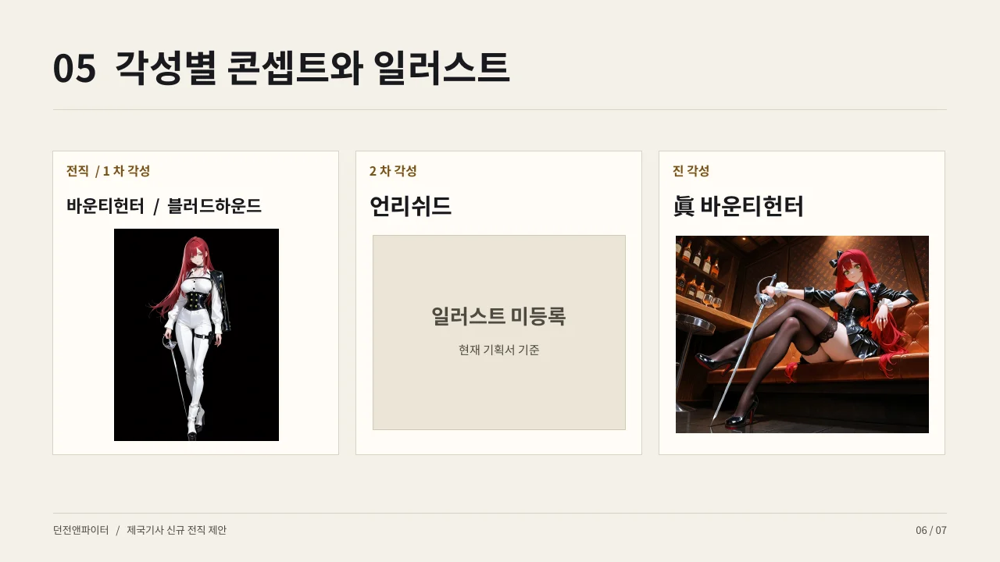
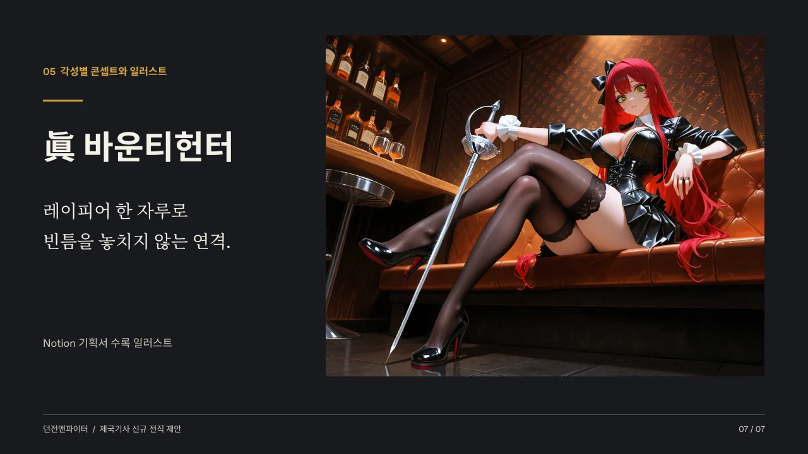

슬라이드 텍스트로 읽기
- 01 전직 개요 및 기획 의도
- 기본 피해는 그대로, 연계로 더 강하게
- 연계 타이밍이 숙련도를 가른다
- 처음에는 익숙한 공격으로 각 스킬의 기본 피해를 낼 수 있다.
- 숙련되면 마지막 타격 직후 후딜레이를 끊어 같은 기회에 더 많은 피해를 줄 수 있다.
- 전직
- 바운티헌터
- 주 무기
- 레이피어
- 플레이 핵심
- 마지막 타격 직후 연계
- 던전앤파이터 / 제국기사 신규 전직 제안
수배자를 추적하는 레이피어 검사. 스킬을 끝까지 맞힌 뒤 후딜레이를 캔슬해 빠른 연격을 이어가는 전직을 설계했습니다.
16:9 · 총 7장







캔슬을 사용하지 않아도 기본 피해를 온전히 줄 수 있습니다. 마지막 타격 직후 다음 스킬로 이어가면 후딜레이를 줄이면서 추가 피해를 노릴 수 있도록 설계했습니다.
노션의 공유 설정에 따라 열람 권한이 필요할 수 있습니다.